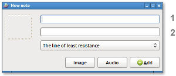

Definitions
Note: Word or sentence of up to 150 characters.
Topic: List of notes preferably related, for example: "The beach".
Adding notes
The program allows you to save words or sentences that you find in a list called Topic.
You can add your own manual translations or use an online translator to do that, automatically.

Please note: In the upper text field (1) enter text in foreign language. Below (2) enter text in native language.
Tip: Select a portion of text from any source, then click on "New".
If you want to add an image to a note use screen clipping: Click on the button "Image" and then simply select any region of screen that you want to capture.
Other ways to add text:
- Selecting text blocks with mouse to batch processing.
- Try to get text from an image (Optical character recognition): Type the letter i in text field from New note dialog box, click on the button Add, then proceed in the same way as adding an image.
Specifying the colors of words
Colors refer to the grammatical elements.
| pronoun | verb | adjective | preposition |
| adverb | conjunction | noun or adjective | noun or verb |
Review at time intervals that increase
The program notices you to review a topic periodically.
The time intervals between reviews grow from 6 days to 2 months as follows:
Icons legend according to reviews:
| new | mature | learnt |
| reviewing | to review | to review, second notice |